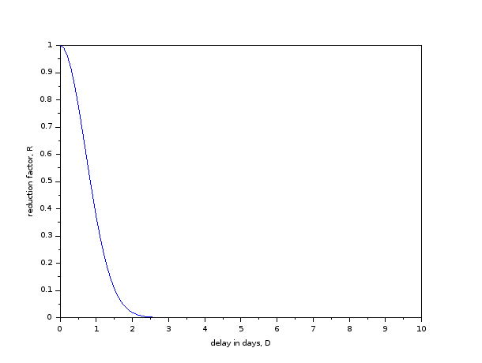

CE 607: Advanced Structural Analysis - Fall 2022
Table of Contents
- Basic Information
- Course objectives, syllabus, books, pre-requisites
- Course Policies
- Calendar (tentative)
- [L1] 02 August, Tuesday
- [L2] 04 August, Thursday
- [L3] 05 August, Friday
- 09 August, Tuesday
- [L4] 11 August, Thursday
- [L5] 12 August, Friday
- [L6] 16 August, Tuesday
- [L7] 18 August, Thursday
- 19 August, Friday
- [L8] 23 August, Tuesday
- [L9] 25 August, Thursday
- [L10] 26 August, Friday
- [L11] 30 August, Tuesday
- [L12] 01 September, Thursday
- [L13] 02 September, Friday
- [L14] 06 September, Tuesday
- [L15] 08 September, Thursday
- [L16] 09 September, Friday
- [L17] 13 September, Tuesday
- [L18] 15 September, Thursday
- [L19] 16 September, Friday
- [L20] 20 September, Tuesday
- [L21] 22 September, Thursday
- [L22] 23 September, Friday
- 24 September - 01 October: Mid Semester Exam Week
- 02 October - 09 October: Mid Semester Recess Week
- [L23] 11 October, Tuesday
- [L24] 13 October, Thursday
- [L25] 14 October, Friday
- [L26] 18 October, Tuesday
- 20 October, Thursday
- [L26] 21 October, Friday
- [L27] 25 October, Tuesday
- [L28] 27 October, Thursday
- [L29] 28 October, Friday
- [L30, L31] 01 November, Tuesday
- [L32] 03 November, Thursday
- [L33] 04 November, Friday
- 08 November, Tuesday
- [L34] 10 November, Thursday
- [L35] 11 November, Friday
- [L36, L37] 15 November, Tuesday
- [L38] 17 November, Thursday
- [L39] 18 November, Friday
- [L40, L41] 22 November, Tuesday
- 24-30 November: End Semester Exam Week
Basic Information
| Class timings | Tuesday, Thursday, Friday, 17:05-18:00 |
|---|---|
| Class location | AB 7/202 |
| Instructor | Gaurav Srivastava (gauravs@iitgn.ac.in) |
| TA | Dravesh Yadav (dravesh.yadav@iitgn.ac.in) |
Course objectives, syllabus, books, pre-requisites
Objectives
- To learn matrix stiffness method for analysis of skeletal structures.
- To develop a computer program to perform analysis of skeletal structures based on the direct stiffness method.
- To learn analysis of structural systems with material and/or geometric nonlinearities.
After finishing this course, you will
- understand matrix analysis of structures
- know how to use computer programming to analyze large structural systems
- understand nonlinear analysis of structures
Syllabus
- Review of basic structural analysis methods: indeterminacy, force, displacement, energy methods of analysis.
- Matrix method of analysis: flexibility method (only introduction) and stiffness method for linear elastic cases (direct formulation).
- Consideration of geometric nonlinearity in direct stiffness method; P-delta effects.
- Incremental plastic analysis, formation of plastic hinges, consideration of material nonlinearity in direct stiffness method (incremental formulation).
Reference Books
- Intermediate Structural Analysis - C.K. Wang - Tata McGraw Hill.
- Matrix Analysis of Framed Structures - William Weaver Jr. and James M. Gere - CBS Publishers.
- Matrix Structural Analysis - William McGuire, Richard H. Gallagher and Ronald D. Ziemian (download).
- Advanced Analysis and Design of Steel Frames - Guo-Qiang Li and Jin-Jun Li - Wiley.
- Plastic Analysis and Design of Steel Structures - M. Bill Wong - Elsevier.
Pre-requisites
- Knowledge of basic linear algebra:
- rank, column space, null space of a matrix,
- solving system of linear algebraic equations,
- computing eigenvalues and eigenvectors.
- Knowledge of a programming language:
Course Policies
Etiquette
- Please be considerate about everyone's time.
- In all emails pertaining to this course, please have "CE607" in the subject line.
- (note that there is no space or hyphen or anything between CE and 607)
Cheating
Cheating cases (assignments/quizzes/exams) will be awarded an F grade and will be reported to academic office. It is expected that this will never happen and everyone will uphold the honor code.
Late submissions
All delays beyond the defined deadlines will attract reduction in marks as per the following curve. The reduction factor, \(R\) will be multiplied to the obtained marks. Mathematically, it is given by: \(R = \exp(-D^2)\), where \(D\) is the total delay in days (will be counted hourly, i.e. fractional days are possible). 
Grading
Following will be the weightage of different components of assessment
| Component | Weightage |
|---|---|
| Homework assignments | 30% |
| Spot quizzes | 20% |
| Class participation | 10% |
| Midsem exam | 20% |
| Endsem exam | 20% |
Modes of formal assessment
- Assignments will involve detailed analysis and design questions.
- Expect one assignment per week.
- Spot quizzes will primarily be objective type, primarily based on concepts and codes. Expect one quiz per week.
- Exam will primarily be subjective type. It may be in-class or take-home.
Emphasis on self-learning
It is important to develop the habit of self-learning. A number of reading assignments and self-exercises will be given during the course. These will not be formally graded and it will be expected that students will go through them on a regular basis on their own.
Calendar (tentative)
(see Previous Year's website and calendar).
[L1] 02 August, Tuesday
- Introduction. Concepts of material and geometric nonlinearity.
- Reading assignment: Review energy and virtual work concepts.
[L2] 04 August, Thursday
- Energy and complimentary energy. Virtual work and complimentary virtual work. Cause and effect relation between load-displacement.
- Reading assignment: Review energy and virtual work concepts.
[L3] 05 August, Friday
- Review of joints, members, fixed-end moments and joint loads. Stiffness of a 1D bar/truss element. 2D coordinate transformation.
- Ungraded assignment: Derive stiffness matrix using energy. Derive 2D coordinate transformation matrix.
- Assignment 1 (download) – due on 12 August
09 August, Tuesday
- Holiday (Muharram).
[L4] 11 August, Thursday
- Solution of an assembly of truss members using stiffness matrix method. Assembly of matrices.
- Ungraded assignment: Why can we add stiffness coefficients when assembling the global matrix? Why is the assembled global matrix (and member stiffness matrix) singular?
[L5] 12 August, Friday
- Stiffness matrix of 1D bar element. Eigenvalue, eigenvectors and other properties of stiffness matrix. Mode shapes of a truss element.
- Assignment 2 (download) – due on 23 August
[L6] 16 August, Tuesday
- Solving problems with matrix stiffness method.
[L7] 18 August, Thursday
- Steps for solving problems with matrix stiffness method.
19 August, Friday
- Holiday (Janmashtami).
[L8] 23 August, Tuesday
- Computer program for stiffness matrix method.
[L9] 25 August, Thursday
- Computer program for stiffness matrix method.
[L10] 26 August, Friday
- Computer program for stiffness matrix method.
[L11] 30 August, Tuesday
- Stiffness of a beam member. Examples of assembling systems with multiple beams members.
- Quiz 1
- Assignment 3 (download) – due on 6 September
[L12] 01 September, Thursday
- Analyzing of axially rigid beam and frame systems.
[L13] 02 September, Friday
- Analyzing of axially rigid beam and frame systems. Formulation of frame member with six DOFs.
- Ungraded assignment: Think about the following:
- (Why) Is a truss analyzed as a truss?
- Why is the strain-displacement relation \(\epsilon = du/dx\) linear?
- What is the nonlinear relation between strain and displacement?
[L14] 06 September, Tuesday
- Coordinate transformation for frame members with six DOFs.
- Ungraded assignment: Derive the nonlinear strain-displacement relation. Find out about time complexity of inversion of a matrix.
- Assignment 4 (download) – due on 9 September
[L15] 08 September, Thursday
- Analyzing axially non-rigid frames. Consideration of support settlements and directly applied joint moments/forces.
[L16] 09 September, Friday
- Idea behind geometric nonlinearity. Consideration of geometric nonlinearity for truss member.
[L17] 13 September, Tuesday
- Stiffness matrix of truss member considering geometric nonlinearity
[L18] 15 September, Thursday
- Stiffness matrix of truss member considering geometric nonlinearity. Iterative methods of solution.
- Ungraded assignment: Review Newton-Raphson method. Think about implementation of the simpler iteration scheme discussed in class.
[L19] 16 September, Friday
- Stiffness matrix of truss member considering geometric nonlinearity using energy method.
[L20] 20 September, Tuesday
- Assignment 5 (download) – due on 23 September
[L21] 22 September, Thursday
- Solution methods for systems with geometric nonlinearity.
[L22] 23 September, Friday
- Review of basic concepts and problem solving.
- Ungraded assignment: Go through the resource material for SAP2000.
24 September - 01 October: Mid Semester Exam Week
Mid Semester Exam - Wednesday, 28 September, 14:00 - 16:00 hrs in AB 7/101.
02 October - 09 October: Mid Semester Recess Week
[L23] 11 October, Tuesday
- Review of SAP2000.
[L24] 13 October, Thursday
- Structural idealizations.
[L25] 14 October, Friday
- Discussion of 3D frame with slab problem given in previous class.
- Ungraded assignment: Find out how to do the following in SAP2000
- how to model elastic joints
- what is the axes convention
- how to add wind loads
- how to draw moment/force envelopes
[L26] 18 October, Tuesday
- Discussion of computer model.
- Ungraded assignment: Find out how to do the following in SAP2000
- how to model slab and what is diaphragm action
- what are the assumptions involved in slab model
- model the bridge between AB7 and AB8 in SAP2000 and present its assumptions and analysis in the next class (take appropriate assumptions for material properties)
20 October, Thursday
- No class.
[L26] 21 October, Friday
- Quiz: modeling and analysis of simple truss bridge in SAP2000.
[L27] 25 October, Tuesday
- Quantification of effects of geometric nonlinearity on simple trusses.
[L28] 27 October, Thursday
- Quantification of effects of geometric nonlinearity on simple trusses.
[L29] 28 October, Friday
- Quantification of effects of geometric nonlinearity on simple beams.
[L30, L31] 01 November, Tuesday
- Theoretical background of geometric nonlinearity; stability and bowing functions.
[L32] 03 November, Thursday
- Consideration of material nonlinearity through plastic hinges.
[L33] 04 November, Friday
- Quiz: structural analysis with material nonlinearity.
08 November, Tuesday
- Holiday (Guru Nanak's Birthday).
[L34] 10 November, Thursday
- Quantification of effects of material nonlinearity.
[L35] 11 November, Friday
- Quantification of effects of material nonlinearity.
- Assignment 6 (due on 15.11.2022)
[L36, L37] 15 November, Tuesday
- Failure of materials (yield stress, ultimate stress, yield load, collapse load).
- Quiz: derivation of stability/bowing functions.
[L38] 17 November, Thursday
- Quantification of effects of material nonlinearity.
[L39] 18 November, Friday
- Consideration of combined moment and axial loads on frames; P-M interaction diagram.
- Course reaction survey.
- Assignment 7 (due on 23.11.2022)
[L40, L41] 22 November, Tuesday
- Consideration of combined moment and axial loads on frames; P-M interaction diagram.
24-30 November: End Semester Exam Week
End Semester Exam - Sunday, 27 November, 09:00 - 11:30 hrs in AB 5/303.
- Exam to be assigned on 25.11.2022 at 23:59. Due on 27.11.2022 at 09:00.